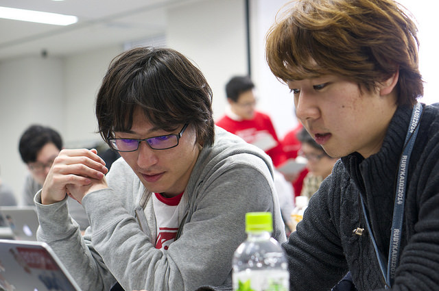
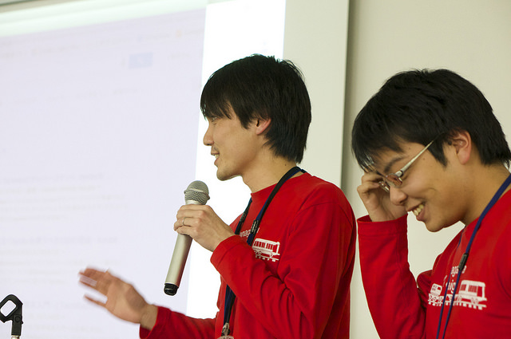
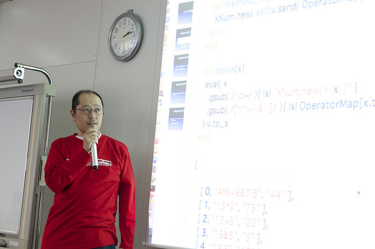
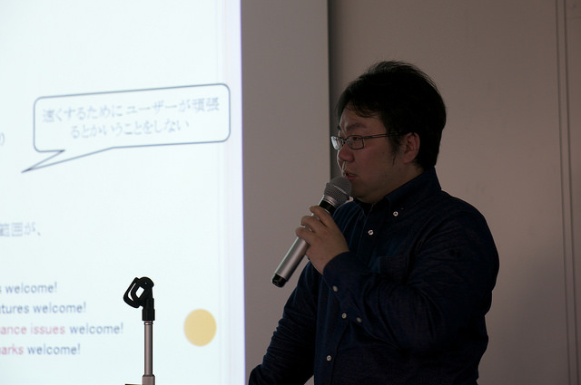
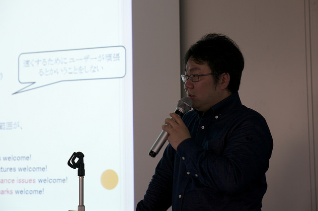
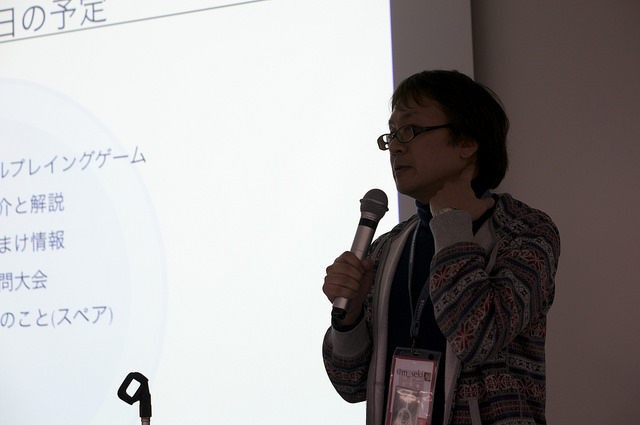
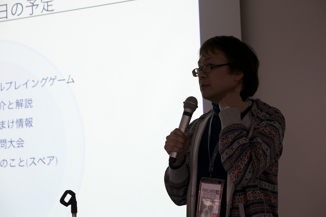

RegionalRubyKaigi レポート (49) 神奈川 Ruby 会議 01
書いた人 : @snowcrush , @miyohide
RegionalRubyKaigi レポート (49) 神奈川 Ruby 会議 01
- 開催日時
- 2015 年 1 月 17 日 (土) 13:00 - 18:35
- 開催場所
- 神奈川県川崎市幸区大宮町1310 ミューザ川崎 セントラルタワー7F NTT-ATプレゼンルーム
- 主催
- Kawasaki.rb & Yokohama.rb
- 参加者
- およそ 80 名
- 公式ハッシュタグ
- #kana01
- 神奈川 Ruby 会議 01 ツイートまとめ
- http://togetter.com/li/771094
- 資料や動画
- 公式サイト
はじめに
2015 年 1 月 17 日に神奈川 Ruby 会議 01 が開催されましたのでその様子についてレポートします。
ペアプロ大会
数ある地域 Ruby 会議の中でも、ペアプロ大会があるのは神奈川 Ruby 会議ぐらいでしょう。今回は、 CodeIQ で数多くの問題を作成されている @Nabetani さん作の問題を 1 時間弱でランダムに組まれたペアで解くというセッションが開催されました。
今回は、遠い世界の数式という問題が出題されました。普段使っている演算子の優先順位が異なっており、ぱっと見、『難しそう』という印象を持たれる方もちらほら。しかしながら、予め用意されたヒントや TA さん、そしてペア同士が開始直後から活発な議論を進めて、終盤にはあちらこちらで「できた！」とか「やった！」といった歓声が飛んでいました。

デモペアプロ
会場正面では、デモペアプロと称して、ペアプロの様子をスクリーンに映しながら解いてもらいました。最初は緊張気味だったお二人も、時間が経つにつれ実装が進み、無事 1 時間以内に全テストをパスすることができました。

発表
1 時間経過後には、解いたプログラムについて発表。プレッシャーがかかる中、問題を解ききった二人には大きな拍手が贈られました。 
解説
その後は、問題作成者である @Nabetani さんによる問題解説と出題者からの回答例の紹介が行われました。回答例ではものすごくシンプルに書かれた実装例に対して、会場からはため息にも似た感嘆の声があちこちで起こっていました。 
Ruby入門
続いては、高橋正義さんによる「 Rubyist 入門 2015 」という発表が行われました。簡単に Rubyist の定義について触れたあと、初級編・中級編・上級編、特に初級編に合わせた Ruby に対する接し方について説明いただきました。
初級編や中級編に対して特に強調されていたのが「人」との関わり。 Ruby を学ぶことを助けてくれるのも「人」であれば、使う理由であるのも「人」ということを強調されてました。


神奈川県内Rubyコミュニティ紹介
この神奈川 Ruby 会議 01 を共同開催している、神奈川の 2 つのコミュティについて紹介が行われました。
kawasaki.rb
kawasaki.rb は 2014 年の Ruby Kaja でもある @chezou さんが主催するコミュニティです。毎月第 4 水曜日にミューザ川崎で開催されています。南武線沿線という土地柄もありメーカー勤務の方を中心に多様なバックグラウンドを持った方が参加されているのが特色で、 Ruby 以外にも様々なトピックを扱っています。最近では kawasaki.rb で発表したネタがホットエントリに上がるということも多くなってきているそうです。
また、パーフェクト Ruby 読書会を定例で実施していて、初心者でもアウトプットできる場所を目指されているとのことです。
yokohama.rb
yokohama.rb は「横浜周辺の Ruby 技術者が集まって Ruby に関しての何かをする会」です。毎月第 2 土曜日に東神奈川駅近くで開催しています。 2010 年 10 月からスタートして 2014 年 11 月に記念すべき第 50 回を迎えたとのこと。なんと、のべ参加人数は 1,000 人を超えたそうです。
内容としては Ruby レシピブック第 3 版の読書会や、もくもく会、突発 LT 会などをやっていて、コンセプトは「参加者の疑問・タスクを集中して解決するための場」としてのコミュニティという紹介をしていただきました。
基調講演1 「ある Rubyist が Committer になったその理由」
2010 年から Ruby の Committer をされている樽家 昌也さんから Committer になられた経緯とその理由について語られました。
普段はメーカーにお勤めの樽家さん。 Ruby に対するコミッター業は「遊び」と称していて、本当に本心からプログラミングを楽しんでいるんだと感じました。
本題である「理由」については、「もっと楽しく、気持ちよくなりたいために、そのための努力は惜しまない」ため。そういう意味では、 Gem を作るということも、 Ruby を使ってより怠惰にしてくれるという意味ではコミッターとは変わらないのではないかと提案して、基調講演を締めました。
 

Rubyと俺達の生存戦略
この神奈川 Ruby 会議 01 のコンセプトでもある「 Cross the border 」を趣旨として、 Ruby を使って活躍されているエンジニアの方々に今までの、そして今後の「生存戦略」について話していただきました。
エンタープライズ系と Web 系の方、大企業にお勤めの方とスタートアップやベンチャーに勤めておられる方、マネジメント寄りの方とエンジニア指向寄りの方など、様々な軸足を持った方々が集まり、エンジニアとしての生き方について語るという非常に豪華なセッションになりました。
司会の @chezou さんも想像以上に「エモく」なったとコメントされていましたが、エンジニアで「生存戦略」について悩んでいる方ならば一度はご覧になると得られるものが大きいのではと思います（セッション内容は YouTube で公開しています）。
とくに印象に残ったトークとしては、「職人として最高のものをコツコツ作りたいか、それともフツーのものを多くの人に使ってもらいたいか」というテーマでの回答でした。 スピーカーの方々の多くが、それぞれ意見は異なりながら、多くの人に届けたいという結論を出していたことです。各界の前線で活躍されている方々だからこそ「人に使ってもらう」ということを強く意識されているのだと感じました。
基調講演2 「 Role-playing game remaking 」
「プログラマが知るべき 97 のこと」にエッセイを寄稿されている関 将俊さんから、寄稿された内容である「ロールプレイングゲーム」の背景やそこから得られた知見について発表が行われました。
会場が最初に盛り上がったのは、エッセイ「ロールプレイングゲーム」を Mac を使って朗読させたこと。エッセイを読んでいなくても同じスタートラインに立てる素晴らしいアイディアでした。
その後は、「なりきるときがしんどくなったときのテクニック」として、「理想はたどり着けないぐらいにすごそうなイメージなので、辿りつけなくても全然がっかりしない」といった気の持ち方について語られたあと、ロールは新しく作られることもあることを題材に講演が進みました。
今回、紹介されたロールの名前は「プロの無職」。ネーミングのユニークさと、働き方が聴衆の心を捉え、発表後の質疑応答や懇親会では「プロの無職」が大流行しました。
 

まとめ
神奈川 Ruby 会議 01 では、ペアプロにより参加者同士が打ち解けたあと、 Ruby との接し方について各登壇者が自らの思いをそれぞれ発表されてました。なお、ほとんどのセッションでは動画撮影が行われていますので、ぜひともそちらも合わせて見ていただければと思います。
著者について
みよひで ( @miyohide )
とある SIer にて働く Rubyist 。趣味はマラソン。トークセッションでは喋るたびに笑いを起こす。
とくだ ( @snowcrush )
Web 系企業で生存戦略に悩む Rubyist 。最近はボードゲームにハマっている。